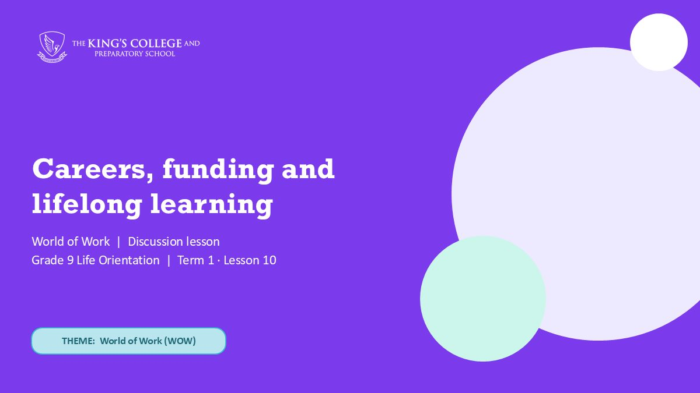

Term 1 · Lesson 10 · Discussion lesson
Careers, funding and lifelong learning
Start here
Today I will
- Name ways to pay for further study
- Explain why lifelong learning matters
- Understand the Term 2 Assessment brief
How much do you think a three-year degree costs? Who could help pay for it?
Words to know
- Bursary
- Money for study that you don't pay back, but you may have to work for the funder afterwards.
- Scholarship
- An award for study, usually based on excellent marks or talent.
- Student loan
- Money borrowed for study that must be paid back with interest.
- NSFAS
- National Student Financial Aid Scheme: government funding for qualifying students.
- Lifelong learning
- Continuing to learn throughout your life.
- Work-back
- Working for a bursary funder for a set time after you qualify.
Slides

Videos
Notes
Studying after school costs money, but there are many ways to pay for it. And learning doesn't stop when you leave school: in a fast-changing world, lifelong learners have the best opportunities.
Ways to pay for further study
| Option | What it is | What to know |
|---|---|---|
| Bursary | Money for study that you don't pay back | Often from companies or government departments; may require a work-back. |
| Scholarship | An award, usually for excellent marks or talent | Often covers part of the fees; must keep marks up. |
| NSFAS | Government funding for students from qualifying households | Apply online in Grade 12; covers fees and some living costs. |
| Student loan | Money borrowed from a bank | Must be repaid with interest; usually needs a guarantor. |
A work-back means working for the bursary funder for a set time (often a year for every year of funding) after you qualify. Good marks in Grades 10–12 open the most funding doors. Applications usually open early in Grade 12, so start researching in Grade 11.
Lifelong learning
Lifelong learning means continuing to learn throughout your life, through courses, reading, mentors, online learning and experience. Technology and jobs keep changing: many jobs your generation will do do not exist yet. People who keep learning adapt, find new opportunities and grow as people.
- Growth mindset: believing you can learn new things at any age.
- Curiosity: asking questions and exploring.
- Planning: short-, medium- and long-term learning goals.
- Reflection: learning from mistakes and feedback.
Case study: Mia's bursary research
Mia wants to study nursing, but her family is worried about the cost. In LO she learnt about bursaries and NSFAS. She found that the provincial health department and some private hospital groups offer nursing bursaries, often with a work-back. She wrote down the application dates in her Google Calendar for Grade 11 and 12, and set a goal to keep her marks above 70% so that she qualifies. Planning early made the dream feel possible.
Questions to think about: What is a work-back? Why did Mia's marks matter? Which skill from Lesson 2 did she use?
Worked exam answer
Question: Analyse why lifelong learning is important in today's world of work. (1 x 4) (4)
Answer: Technology and jobs are changing quickly ✓ so skills learnt at school may become outdated ✓ especially as new jobs appear that did not exist before ✓ which means people who keep learning can adapt and find better opportunities ✓.
Distinguish between a bursary and a loan, explain what NSFAS is, and explain (with a reason and an outcome) why lifelong learning matters.
Good marks open funding doors, and learning never stops.
In class: Term 2 Assessment brief
- Read the Term 2 Assessment brief together.
- Choose a role model who lives out constitutional values.
- Note the rubric and the due date (Term 2, Week 3).
- Write one question about the task.
Test yourself
- What is the difference between a bursary and a loan?
- What is NSFAS?
- Give one reason lifelong learning matters.
Show answers
1. A bursary isn't repaid; a loan must be repaid with interest. 2. Government student funding for qualifying students. 3. e.g. jobs and technology keep changing.
Finished early?
Find out how government student funding works.
- Go to the NSFAS website (www.nsfas.org.za).
- Find and write down two facts: who can apply, and what NSFAS can cover.
- Write one way NSFAS is different from a bursary with a work-back.
- Write down in which grade you would apply, and add a reminder to your Google Calendar if you like.